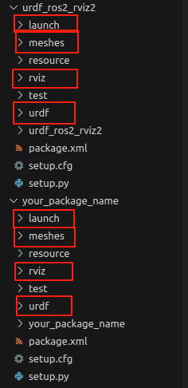
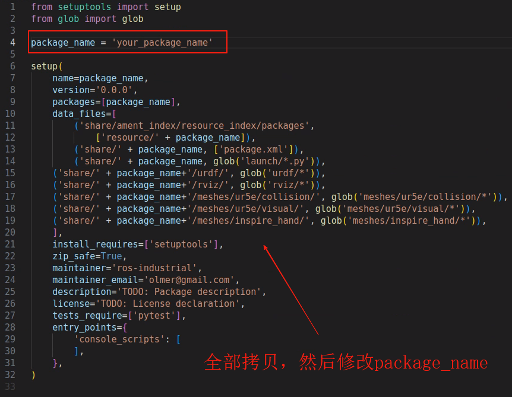
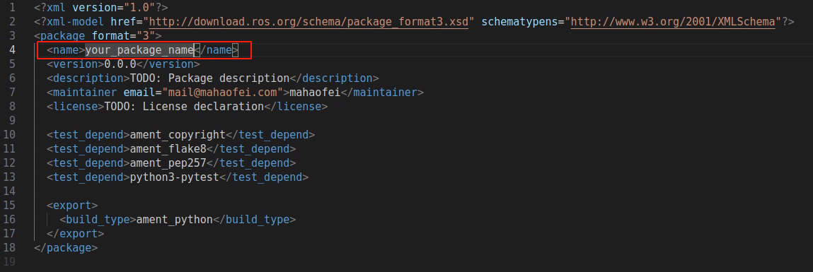
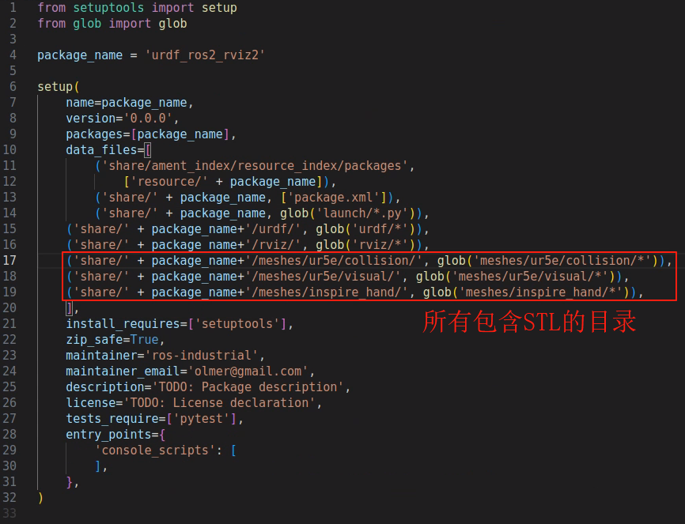
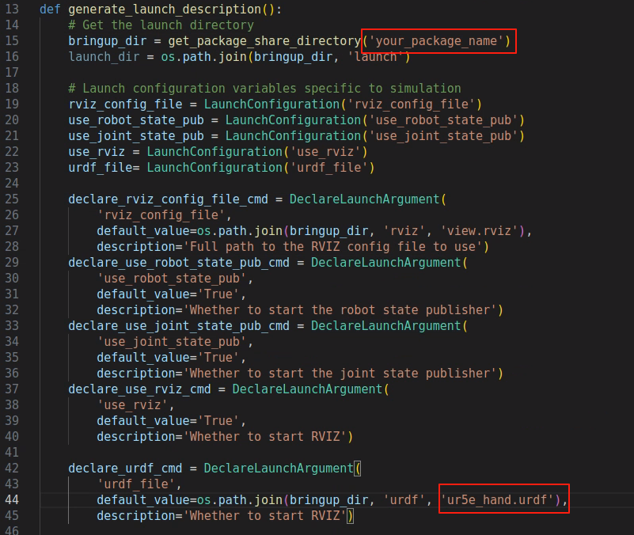
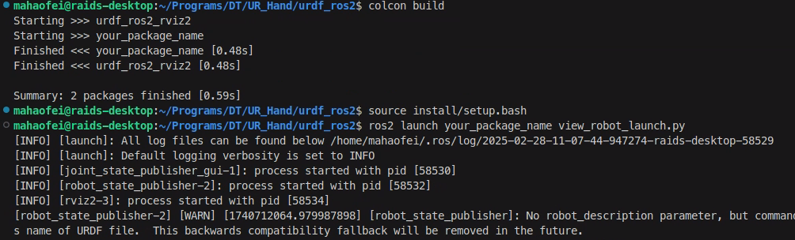
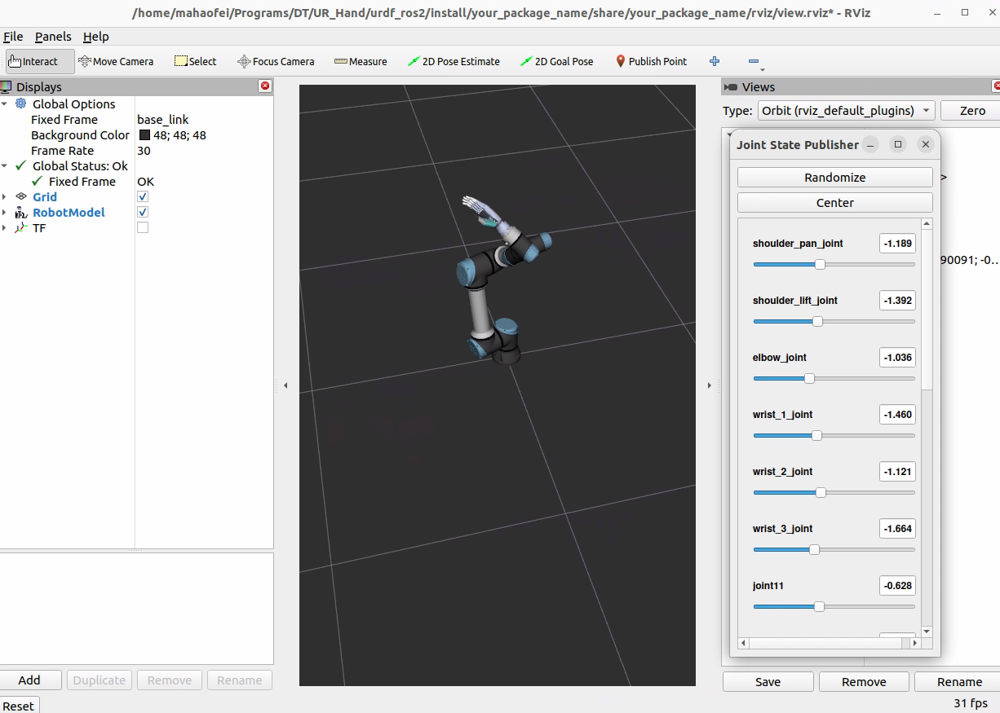

ROS2_Rviz2显示URDF模型
一、实验环境及准备
测试环境：
- Ubuntu 22.04 LTS
- ROS2 Humble
准备：
- URDF 及对应的 Mesh 文件
（本文使用的是从 Solidworks 导出的 URDF，具体导出方法可参考此文章）
依赖：
- 确保自己的 ROS2 安装正常（能够运行 turtle demo 即可）
- 安装
joint_state_publisher和robot_state_publisher
1 | sudo apt install ros-$ROS_DISTRO-joint-state-publisher-gui ros-$ROS_DISTRO-robot-state-publisher |
二、工作空间与功能包配置
1 | mkdir ros2_ws |
为了方便实现，避免对 launch，package，setup.py 等文件进行过多修改混乱，可以在本文在 Github 上传的代码（https://github.com/HaofeiMa/urdf_ros2_rviz2）基础上修改，以满足自己需求，该代码为 UR5e 机械臂+Inspire Hand 灵巧手模型：
1 | git clone https://github.com/HaofeiMa/urdf_ros2_rviz2.git |
完成之后，可以首先测试一下是否可以正常 build 以及显示现有模型：
1 | colcon build |
应该可以看到 Rviz2 界面以及现有模型。
三、修改功能包
（1）创建功能包
创建一个自己的 package，并且借鉴刚才 clone 的部分代码：
1 | ros2 pkg create your_package_name --build-type ament_python |
（2）复制文件
将 urdf_ros2_rviz2 目录下的 launch, meshes, rviz, urdf 四个文件夹，拷贝到新的 your_package_name 目录下。

（3）修改 setup.py
将 urdf_ros2_rviz2 中的 setup.py 文件代码全部拷贝过来，然后修改：
1 | # 第4行 |

（4）修改 package.xml
将 urdf_ros2_rviz2 中的 package.xml 文件代码全部拷贝过来，然后修改：
1 | <!-- 第4行 --> |

（5）复制 Meshes 文件
将你的 mesh 文件全部复制到 meshes 文件夹中，并将原来的 mesh 文件删除。
注意如果你 meshes 文件夹结构与我的不同，需要在 setup.py 中修改，使其与你的 STL 文件对应。

（6）修改 urdf 文件
将你的 urdf 文件复制到 your_package_name 的 urdf 目录中。
然后进行修改：主要是修改包名，以及检查 meshes 路径是否正确，例如
1 | <mesh filename="package://urdf_ros2_rviz2/meshes/ur5e/visual/base.dae"/> |
（7）修改 launch 文件
需要修改 package name 以及 urdf 文件名：

（8）修改 rviz
打开 rviz/view.rviz 文件，找到第 85 行，修改：
1 | # 你的模型的基坐标系 |
（8）测试
1 | colcon build |


参考：
 微信支付
微信支付 支付宝
支付宝